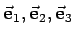
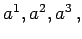
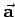
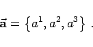
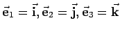
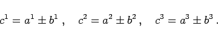

Inhalt Index DeskTop Bronstein

 Geometrie Vektoralgebra und analytische Geometrie Vektoralgebra Koordinaten eines Vektors
Geometrie Vektoralgebra und analytische Geometrie Vektoralgebra Koordinaten eines Vektors


Affine Koordinaten sind eine Verallgemeinerung der kartesischen Koordinaten auf ein System aus drei linear unabhängigen, also auch nicht mehr zwingend rechtwinklig aufeinander stehenden nichtkomplanaren Grundvektoren  mit drei Koeffizienten  wobei die oberen Indizes keinesfalls als Exponenten aufzufassen sind. In Analogie zu (3.264a,b) ergibt sich  zu
oder
|  | (3.268b) |
.
Diese Schreibweise ist insofern vorteilhaft, als die Skalare a1, a2, a3 die kontravarianten Koordinaten eines Vektors sind. Für  gehen die Formeln (3.268a,b) in (3.264a,b) über. Für die Linearkombination der Vektoren (3.261b) sowie für die Summe und die Differenz zweier Vektoren (3.266a,b) gelten in Analogie zu (3.265) die Komponentengleichungen
|  | (3.269b) |